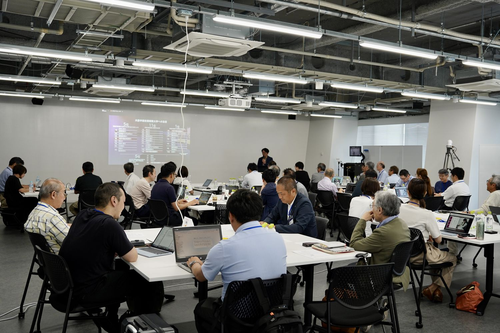
FORUM 09 · 開催報告
共創を作り出すリーダーシップ
大学・高校・地域が主語を変えるとき
2026年7月11日（土）
芝浦工業大学 豊洲キャンパス 本部棟協創ラボ
大森 昭生・吉村 充功・鈴木 耕平
芝浦工業大学 豊洲キャンパス 本部棟協創ラボ
大森 昭生・吉村 充功・鈴木 耕平
大学リーダーシップ研究会は、大森昭生（共愛学園前橋国際大学）、成田秀夫（日本文理大学）、吉村充功（日本文理大学）、山本啓一（北陸大学）が発起人となり、2018年に発足した研究会です。
教学マネジメントを担う現場の教職員のリーダーシップの育成と発展のために、リーダーシップ開発、教育改革、組織開発等について研究を行うとともに、多くの方々の相互交流・情報共有の場を提供しています。第1回から第9回までの公開研究会には、全国から延べ696名、実人数で372名の教職員にご参加いただきました。

次回・第10回公開研究会は、山本啓一の近刊『学部長の教科書』を題材に開催する予定です。日程が決まり次第ご案内します。
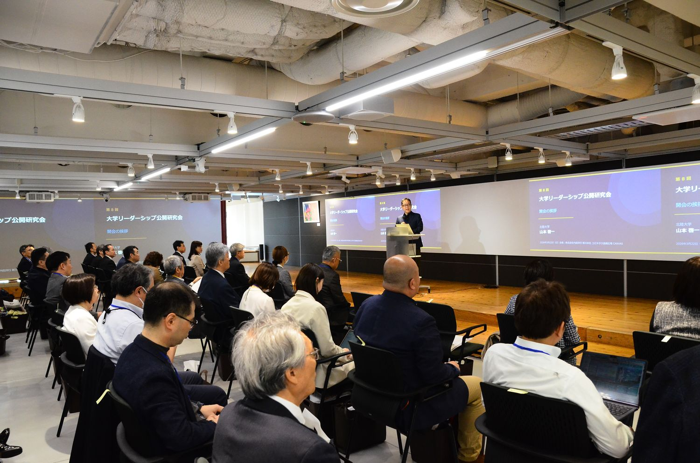
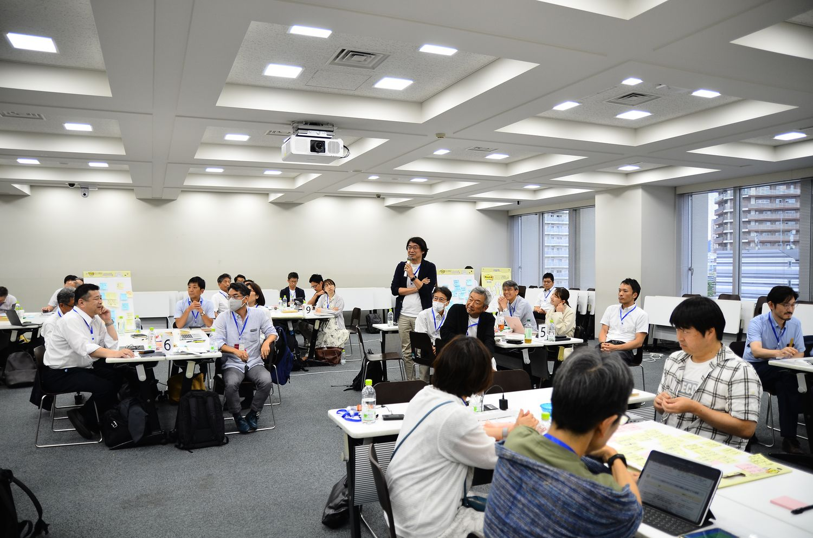
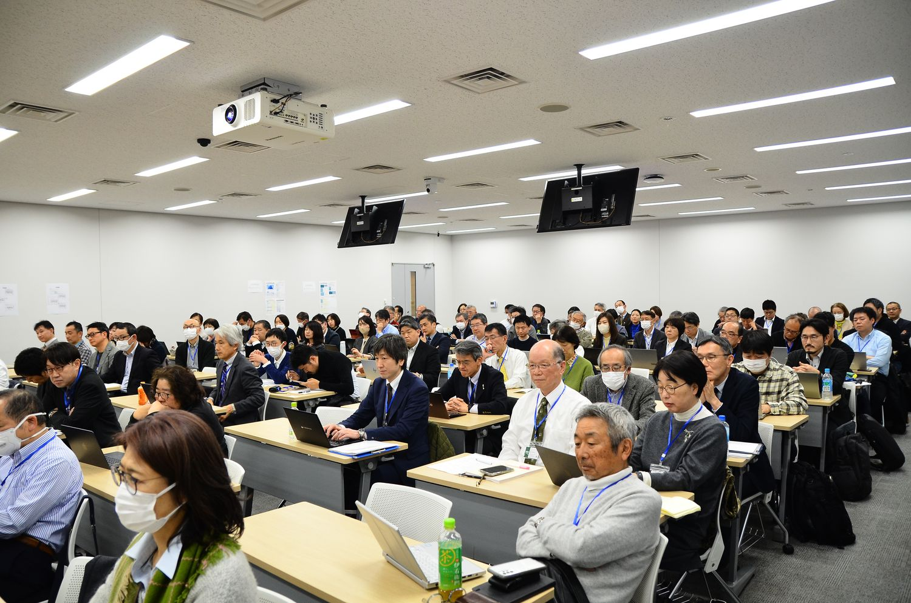

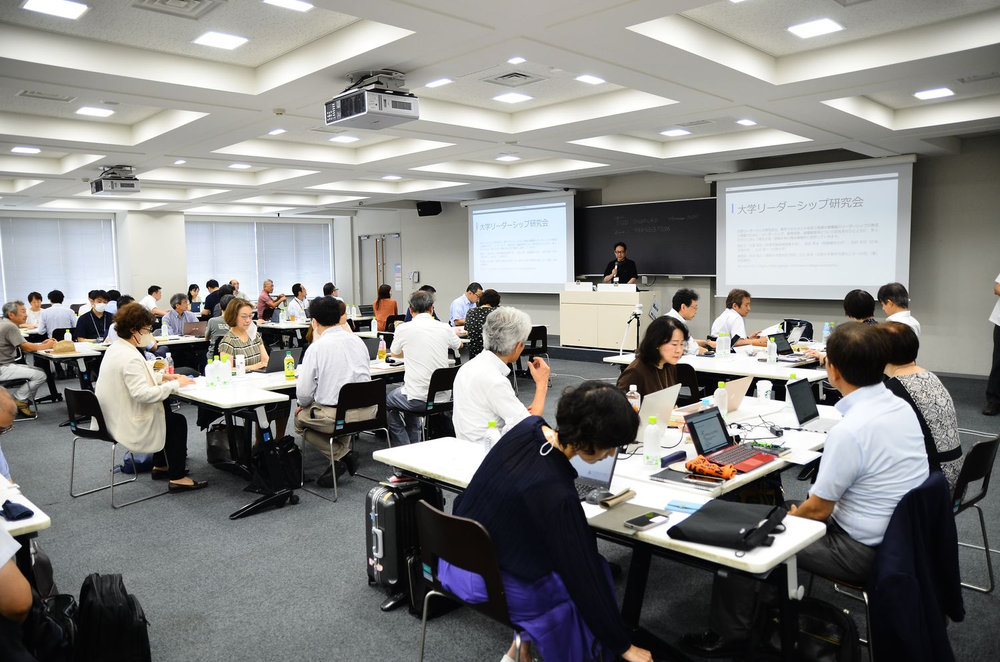
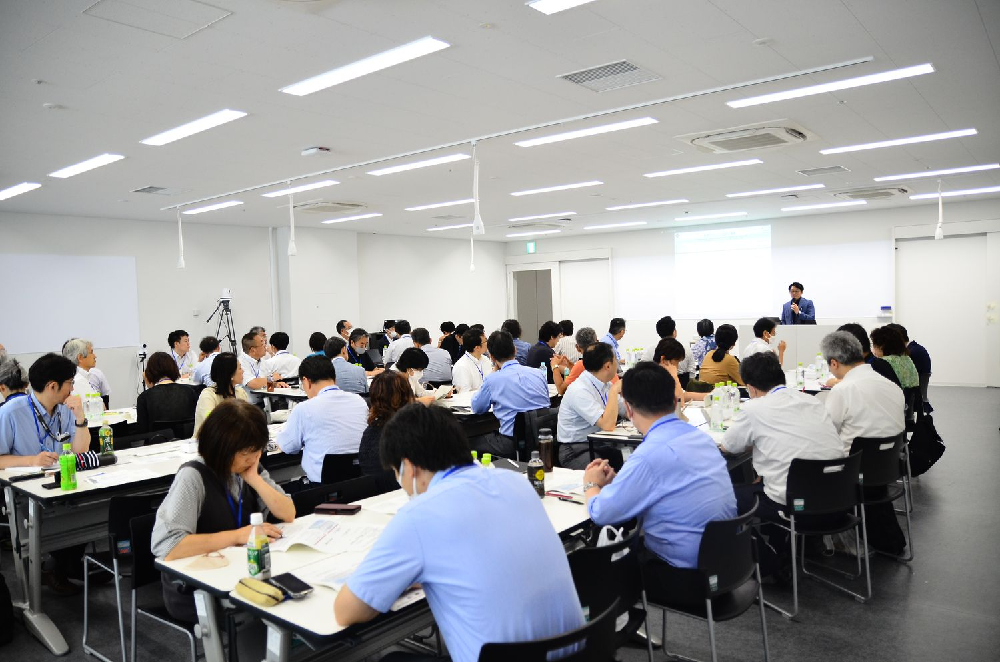
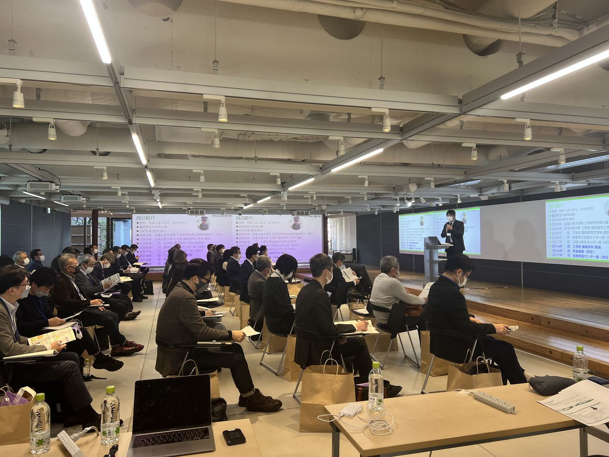
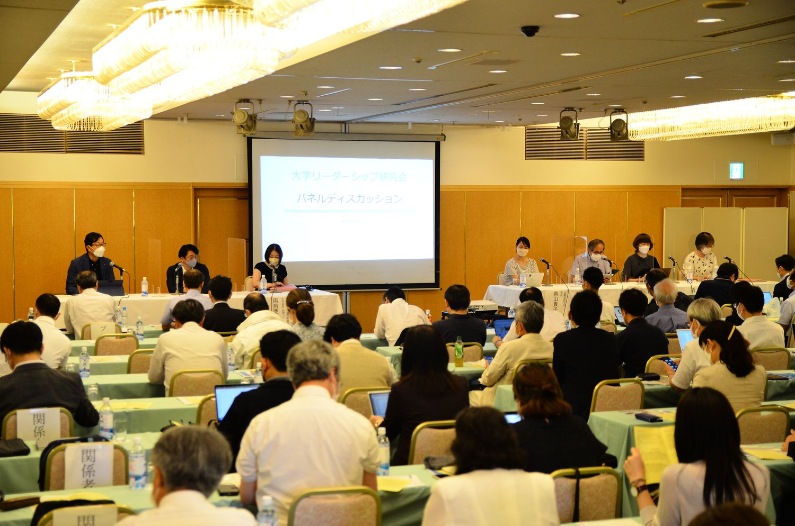
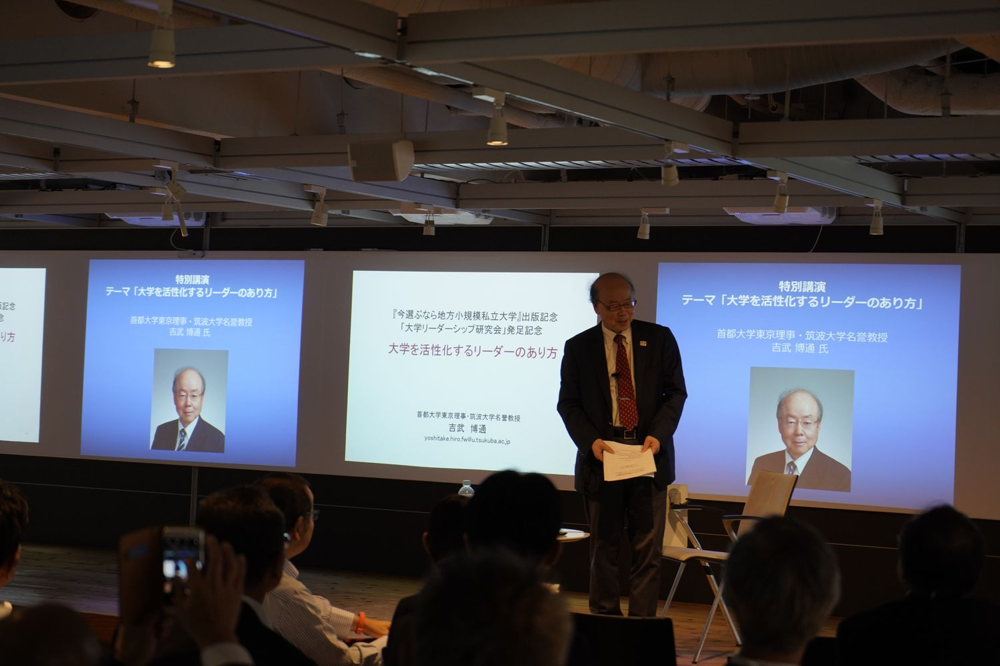
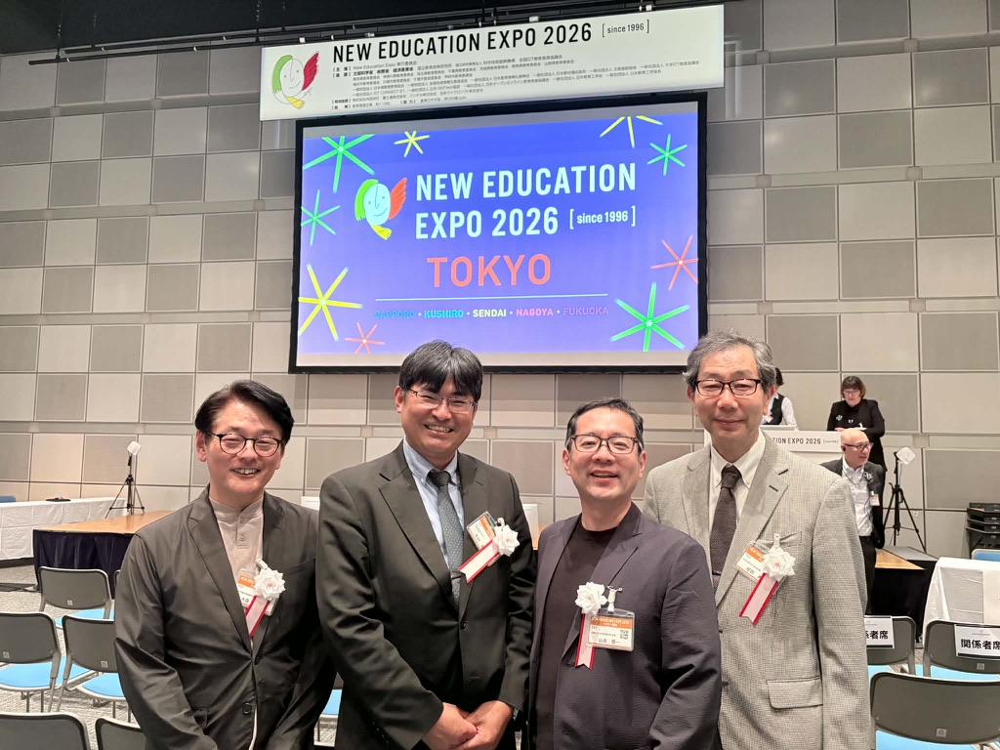
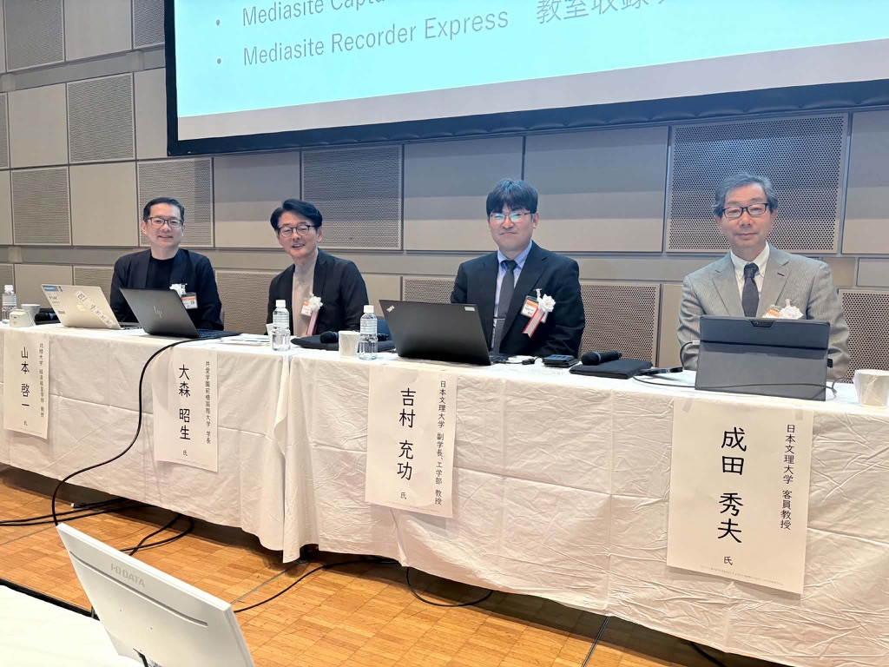
JSPS科研費 基盤研究(C)。公開研究会は本研究の一環として開催しています。
| 回 | 開催 | 回答数 | 全体の満足度 | 仕事との関連性 |
|---|---|---|---|---|
| 第2回 | 2022年7月 | 57 | 4.65 | 4.56 |
| 第3回 | 2023年2月 | 18 | 4.72 | 4.67 |
| 第4回 | 2023年7月 | 36 | 4.64 | 4.75 |
| 第5回 | 2024年7月 | 39 | 4.79 | 4.54 |
| 第6回 | 2025年2月 | 37 | 4.65 | 4.59 |
| 第7回 | 2025年7月 | 36 | 4.69 | 4.61 |
| 第8回 | 2026年3月 | 28 | 4.68 | 4.68 |
| 第9回 | 2026年7月 | 26 | 4.46 | 4.38 |
第1回はアンケートを実施していません。「研究会全体の満足度」と「仕事との関連性・有用性」は、第2回から第9回まで設問の文言が同一のため、横に並べて比べられます。セッション別の評価は回ごとに項目が異なるため、各回のページに掲載しています。いずれも5段階です。
| 事務局 | 京都府京都市北区紫野北花ノ坊町96 佛教大学キャンパス内（水谷俊之） |
|---|---|
| メール | toshimiz@bukkyo-u.ac.jp（事務局・水谷） ke-yamamoto@hokuriku-u.ac.jp（山本） |